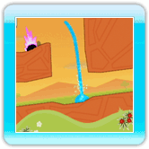

The liquid form of water is the first form you’ll come across when playing Fluidity. The following abilities are available when liquid:
·Jump
 In order to make the water jump into the air, quickly lift the Wii Remote upward. This can be done at any time, even when you’re not on the ground.
In order to make the water jump into the air, quickly lift the Wii Remote upward. This can be done at any time, even when you’re not on the ground.
·Gather
 There are times where you want to ensure that all of your water stays together as a cohesive whole, which is where the gather ability comes in handy.
There are times where you want to ensure that all of your water stays together as a cohesive whole, which is where the gather ability comes in handy.
Once unlocked, simply hold down  to make the water squeeze itself together. This is particularly useful when jumping, to ensure that all of your water stays together while airborne.
to make the water squeeze itself together. This is particularly useful when jumping, to ensure that all of your water stays together while airborne.
·Explode
 If you continue to gather by holding down , eventually your water will explode, sending it flying in all directions. Although you may want to avoid explosions, they can be useful for moving blockages and collecting hard-to-reach water bubbles.
If you continue to gather by holding down , eventually your water will explode, sending it flying in all directions. Although you may want to avoid explosions, they can be useful for moving blockages and collecting hard-to-reach water bubbles.
·Squirt

Once the squirt ability has been unlocked, pressing upward on  while gathering will cause the water to squirt into the air. You can press up on for a vertical spray or combine up with left or right on for directional control. In addition, the longer you gather before pressing up, the higher the water will reach. This can be useful for reaching areas that would be difficult to get to by just jumping, and for getting rid of flying enemies.
while gathering will cause the water to squirt into the air. You can press up on for a vertical spray or combine up with left or right on for directional control. In addition, the longer you gather before pressing up, the higher the water will reach. This can be useful for reaching areas that would be difficult to get to by just jumping, and for getting rid of flying enemies.